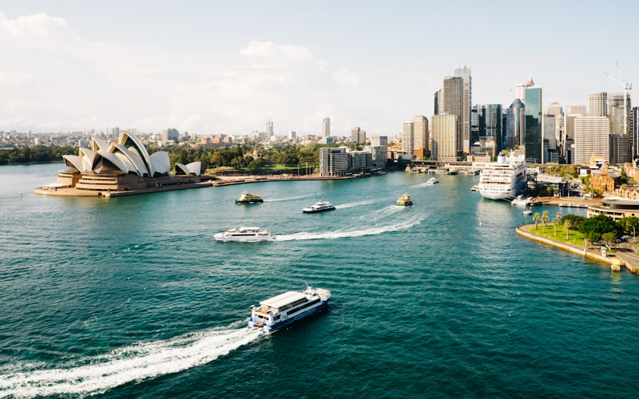
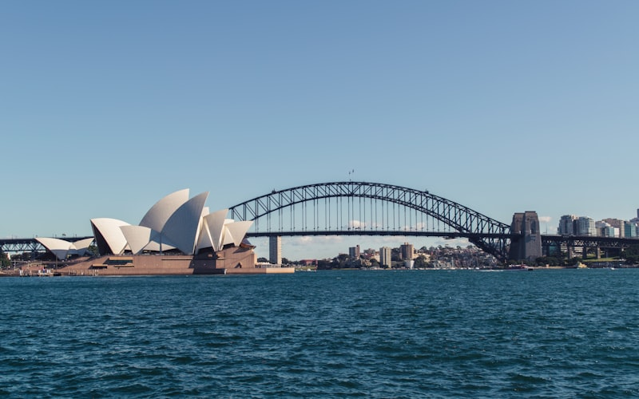
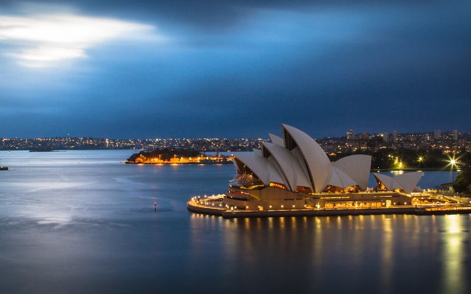
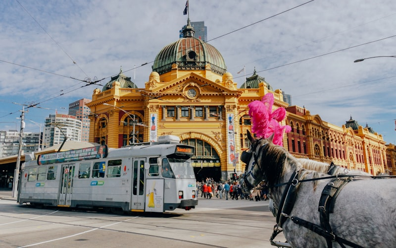
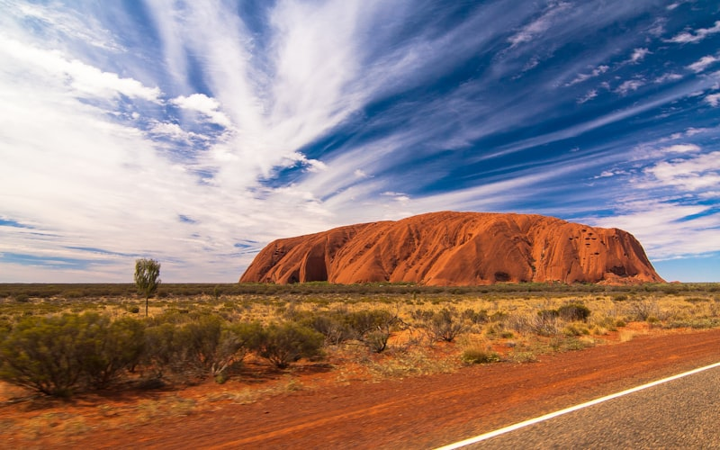

Pourquoi la Côte Est Australienne est un Incontournable
Le road trip sur la côte est de l'Australie est l'un des voyages les plus mythiques au monde. De Sydney à Cairns, cette route légendaire traverse des paysages d'une diversité stupéfiante : métropoles vibrantes, plages de surf désertes, forêts tropicales millénaires, îles paradisiaques et le plus grand récif corallien de la planète. C'est le voyage que font des dizaines de milliers de backpackers chaque année, et pour cause : la côte est australienne concentre le meilleur de ce pays-continent sur un axe accessible et bien desservi.
Trois semaines constituent la durée idéale pour parcourir ces 2 500 kilomètres sans se presser, en prenant le temps de s'arrêter aux étapes clés et de vivre des expériences mémorables. Que vous soyez en Working Holiday Visa, en voyage au long cours ou en vacances, cet itinéraire s'adapte à tous les budgets et à tous les styles de voyage. Pour une vision globale de l'Océanie, consultez notre guide complet Océanie, et si la Nouvelle-Zélande vous attire également, découvrez notre itinéraire en campervan sur l'île du Sud.
Campervan ou Voiture de Location : Comment Choisir
Loueurs recommandés
Jucy, Wicked, Britz et Apollo dominent le marché du campervan en Australie avec des flottes récentes et bien entretenues.
Relocation deals
Profitez des repositionnements de véhicules à partir de 1 AUD/jour entre Sydney et Cairns sur les sites Imoova ou Transfercar.
Le choix du véhicule détermine l'expérience de votre road trip. Le campervan (van aménagé) est l'option la plus populaire et la plus économique sur le long terme. En combinant transport et hébergement, vous économisez sur les nuits d'hôtel et gagnez une liberté totale. Les loueurs principaux (Jucy, Wicked, Britz, Apollo) proposent des vans équipés d'un lit, d'une cuisine et parfois d'une douche à partir de 40-80 AUD par jour (25-50 euros).
L'alternative consiste à louer une voiture classique et alterner entre auberges de jeunesse, campings et hébergements Airbnb. Cette option offre plus de confort de conduite et un meilleur rendement kilométrique, mais le coût total est généralement plus élevé une fois l'hébergement ajouté. Pensez aussi aux relocations (relocation deals) : des loueurs proposent des véhicules à 1 AUD par jour pour les repositionner entre Sydney et Cairns, une aubaine si vos dates sont flexibles.
Étape 1 : Sydney et Blue Mountains (Jours 1-4)
Marche côtière Bondi-Coogee
Cette balade côtière de 6 km est gratuite et offre les plus beaux points de vue sur les plages de Sydney.
Commencez votre aventure à Sydney, la ville la plus emblématique d'Australie. L'Opéra de Sydney et le Harbour Bridge, posés sur la baie scintillante, forment l'un des panoramas urbains les plus reconnaissables au monde. Arpentez le quartier de The Rocks pour son histoire coloniale, flânez dans le Royal Botanic Garden et rejoignez la plage de Bondi Beach pour votre premier bain australien. La marche côtière de Bondi à Coogee (6 kilomètres le long des falaises) est un incontournable gratuit.
Consacrez une journée aux Blue Mountains, à seulement 90 minutes de route à l'ouest de Sydney. Ce parc national classé à l'UNESCO offre des panoramas vertigineux sur des vallées couvertes d'eucalyptus qui dégagent une brume bleutée caractéristique. Les Three Sisters, formation rocheuse emblématique, et les nombreux sentiers de randonnée (Giant Stairway, Grand Canyon Track) justifient amplement le détour. L'air y est frais et parfumé, un contraste saisissant avec l'effervescence urbaine de Sydney.

Étape 2 : Byron Bay et Gold Coast (Jours 5-9)
Après avoir récupéré votre véhicule, mettez le cap vers le nord. Un arrêt à Port Stephens pour observer les dauphins depuis les dunes de sable géantes est une excellente entrée en matière. Poursuivez vers Coffs Harbour et ses plantations de bananiers avant d'atteindre le joyau de cette section : Byron Bay.
Byron Bay est bien plus qu'une ville de surf. C'est un état d'esprit. Le Cape Byron Lighthouse, point le plus oriental du continent australien, offre un panorama à 360 degrés où il n'est pas rare d'apercevoir des baleines (de juin à novembre) et des dauphins toute l'année. L'ambiance bohème, les marchés artisanaux, les cours de yoga au lever du soleil et la scène musicale en font un lieu où de nombreux voyageurs restent bien plus longtemps que prévu. Les vagues de The Pass et Wategos sont idéales pour les surfeurs de tous niveaux.
Traversez ensuite la frontière du Queensland vers la Gold Coast, métropole balnéaire connue pour ses gratte-ciels en bord de mer et ses parcs d'attractions. L'arrière-pays (Lamington National Park, Springbrook) offre des randonnées spectaculaires dans la forêt tropicale, avec des cascades et des vers luisants dans les grottes naturelles.

Étape 3 : Fraser Island et Bundaberg (Jours 10-13)
Tour 4x4 organisé
Sans permis spécial, optez pour un tour 4x4 guidé de 2-3 jours au départ de Hervey Bay.
Vigilance dingos
Ne nourrissez jamais ces chiens sauvages et conservez vos provisions hors de portée.
Fraser Island (K'gari), la plus grande île de sable du monde, est une expérience australienne par excellence. Accessible en ferry depuis Hervey Bay, elle ne se parcourt qu'en 4x4 sur des pistes de sable qui serpentent entre les forêts de rainforest poussant directement sur le sable, les lacs d'eau douce aux eaux cristallines et les plages interminables. Le lac McKenzie, avec son sable blanc immaculé et ses eaux turquoise, est l'un des plus beaux plans d'eau naturels d'Australie.
Roulez sur Seventy-Five Mile Beach, qui sert littéralement d'autoroute côtière, en passant par l'épave rouillée du Maheno et les Champagne Pools, des piscines naturelles protégées des vagues par des rochers volcaniques. Attention aux dingos, les chiens sauvages de l'île : maintenez vos distances et ne les nourrissez jamais. Depuis Bundaberg, profitez-en pour visiter la distillerie de rhum emblématique et les plages de nidification des tortues marines (de novembre à mars).

Étape 4 : Whitsundays et Airlie Beach (Jours 14-17)
Les Whitsunday Islands constituent le moment fort de la côte est pour beaucoup de voyageurs. Cet archipel de 74 îles tropicales, posé au coeur de la Grande Barrière de Corail, offre des paysages d'une beauté irréelle. Whitehaven Beach, classée parmi les plus belles plages du monde, déploie 7 kilomètres de sable de silice d'une blancheur éblouissante. Le point de vue de Hill Inlet, où le sable blanc et les eaux turquoise se mêlent en motifs changeants au gré des marées, est l'image iconique de l'Australie.
Depuis Airlie Beach, plusieurs options s'offrent à vous : croisière de 2-3 jours en voilier (à partir de 400 AUD), excursion à la journée en speed boat, ou vol panoramique pour admirer le Heart Reef (récif en forme de coeur) depuis les airs. Quelle que soit votre formule, la plongée avec masque et tuba dans ces eaux peuplées de tortues, de raies et de poissons tropicaux est un souvenir impérissable.

Étape 5 : Cairns et la Grande Barrière de Corail (Jours 18-21)
Outer Reef vs Inner Reef
Les sites extérieurs offrent une visibilité supérieure et des coraux mieux préservés que les récifs côtiers.
Cairns, point d'arrivée de votre road trip, est la porte d'entrée vers deux merveilles naturelles : la Grande Barrière de Corail et la forêt tropicale de Daintree. Consacrez au minimum une journée complète à une excursion sur le récif. Les sites extérieurs (Outer Reef) comme Agincourt Reef offrent une visibilité supérieure et des coraux plus préservés que les récifs proches de la côte. La plongée sous-marine y est extraordinaire, même pour les débutants qui peuvent obtenir leur baptême sur place.
La Daintree Rainforest, au nord de Cairns, est la plus ancienne forêt tropicale du monde (135 millions d'années). Une croisière sur la rivière Daintree permet d'observer des crocodiles d'eau salée dans leur habitat naturel, tandis que Cape Tribulation marque le seul endroit au monde où deux patrimoines mondiaux de l'UNESCO se rencontrent : la forêt tropicale et la Grande Barrière de Corail. Le Skyrail Rainforest Cableway et le Kuranda Scenic Railway offrent des perspectives spectaculaires sur la canopée.
Rencontres avec la Faune Australienne
L'un des attraits majeurs de la côte est australienne est la possibilité d'observer la faune sauvage dans son habitat naturel. Les kangourous sont omniprésents, particulièrement au crépuscule dans les parcs et les terrains de golf côtiers. Les koalas sauvages s'observent le long de la Great Ocean Road, dans les eucalyptus de Noosa et sur Magnetic Island. Les baleines à bosse migrent le long de la côte de juin à novembre, offrant des spectacles de sauts et de souffles visibles depuis les caps.
Dans les eaux, la diversité est stupéfiante : tortues marines sur la Grande Barrière, dauphins à Port Stephens et Byron Bay, requins-baleines à Ningaloo (côte ouest), raies manta à Lady Elliot Island. Sur terre, les wombats, échidnés et ornithorynques se méritent davantage, mais des sites comme Eungella National Park (près de Mackay) offrent des observations fiables d'ornithorynques au lever du jour.
Budget Détaillé pour 3 Semaines sur la Côte Est
Vol Paris-Sydney
Comptez 1 000 à 1 500 € l'aller-retour avec une compagnie asiatique (Singapore Airlines, Qatar) en escale.
Working Holiday Visa
Le WHV australien est ouvert aux Français de 18 à 35 ans pour un séjour de 12 mois.
L'Australie est une destination onéreuse, mais un road trip sur la côte est peut s'adapter à différents budgets grâce au campervan et au camping :
Budget backpacker en campervan (50-70 AUD/jour, soit 30-45 euros) : van partagé ou relocation deal, campings gratuits (rest areas) et payants en alternance (15-30 AUD), courses au supermarché et cuisine dans le van, activités gratuites privilégiées. Total 3 semaines : 1 050-1 470 AUD (650-920 euros) hors location du van et essence.
Budget confort (120-180 AUD/jour, soit 75-110 euros) : van aménagé de qualité ou voiture + auberges privées, restaurants occasionnels, excursions guidées (Whitsundays, Grande Barrière). Total 3 semaines : 2 520-3 780 AUD (1 575-2 360 euros) hors véhicule.
Les postes de dépense majeurs sont la location du campervan (800-1 700 AUD pour 21 jours), l'essence (environ 400-600 AUD pour le trajet complet), les excursions Whitsundays (400-800 AUD) et la Grande Barrière de Corail (200-350 AUD pour une journée). Pensez au relocation deal pour réduire drastiquement le coût du véhicule.
Téléchargez l'application WikiCamps Australia pour repérer les campings gratuits (free camps) et les aires de repos avec douches et barbecues. De nombreux rest areas en bord de route offrent un hébergement nocturne gratuit et légal, ce qui réduit considérablement le budget hébergement sur un road trip de trois semaines.
Pour compléter votre aventure océanienne, consultez notre guide complet Océanie et découvrez l'île du Sud de la Nouvelle-Zélande en campervan, le complément parfait à ce road trip australien.